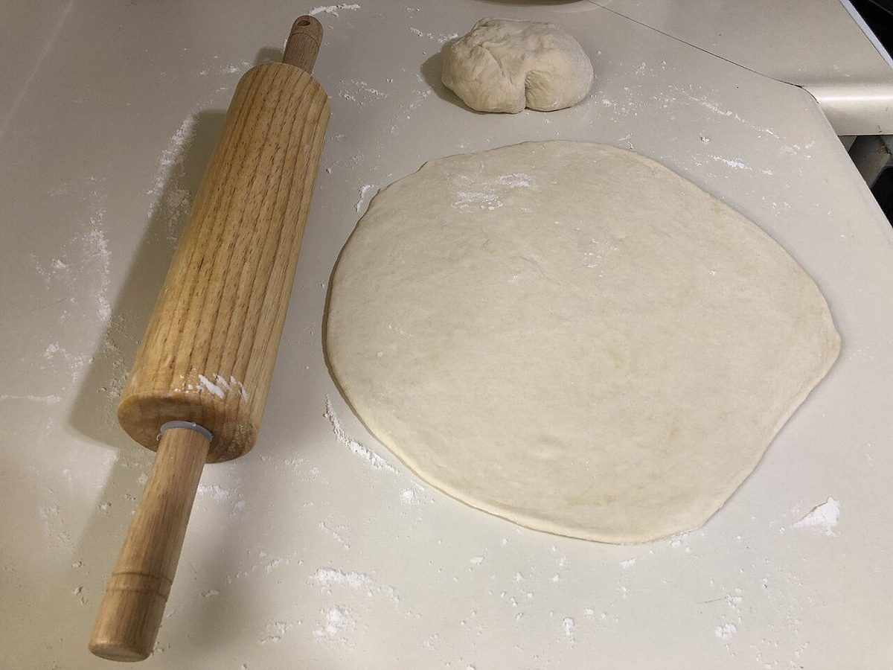

このサイトは制作側が作成した試作サンプルです。コンセプト・文言は制作側の案で、お店の理念や実際の内容ではありません。
お店について
| 店名 | iiSAND |
|---|---|
| 業種 | パン屋 |
| 所在地 | 香川県高松市前田東町743-10 |
| 電話 | 087-884-4674 |
| @iisand0110 | |
| 営業時間・定休日 | 準備中(お問い合わせください) |
| スタッフ紹介・こだわり | 準備中(お問い合わせください) |
 イメージ写真
イメージ写真ご紹介内容を準備中です
お店のこだわりや歩みは、確認でき次第ご紹介します。
このサイトの写真はフリー素材のイメージです。


掲載している写真はフリー素材のイメージで、お店の実際の写真・商品ではありません。日本国外など他地域で撮影されたもの、撮影地が不明なものを含みます。
ご不明な点は、お電話かInstagramでお問い合わせください。